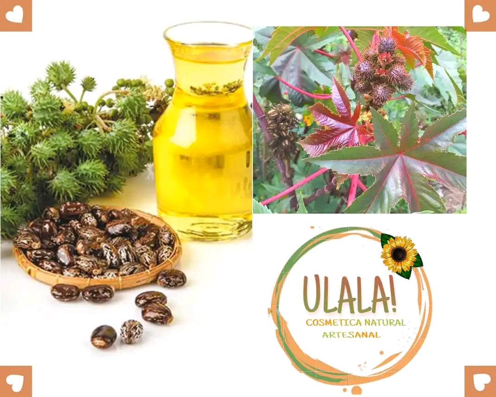

ULALA!
cosmetica natural
INICIO
IMAGENES
PRODUCTOS
INFORMACION
ACEITES...
ACEITE DE ROMERO
ACEITE DE EUCALIPTO
ACEITE DE ALMENDRAS

ACEITE DE RECINO
ACEITE DE NARANJA
JABONES...
JABON DE MANZANILLA Y MIEL
JABON DE CARBON
JABON DE ARROZ